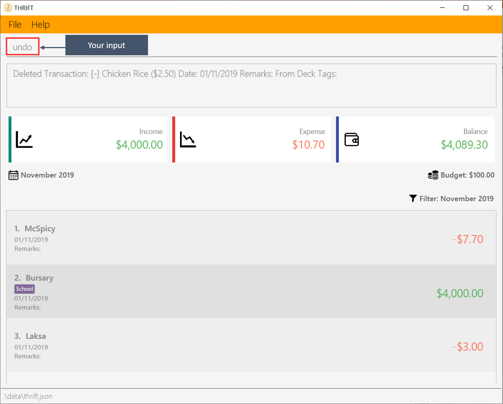

1. Introduction
This portfolio aims to showcase the work that I have contributed to a team project called THRIFT. This project is an assignment under one of the core modules called CS2103T Software Engineering, offered by the School of Computing (SoC) at the National University of Singapore (NUS). I took this module during Year 2 as an undergraduate while pursuing my Bachelor of Computer in Computer Science at NUS.
This project is developed by a team of five highly motivated members: Poh Jia Hao (Team Lead), Lye Jian Wen (Quality Assurance Manager), Ang Chin Guan, Melvin (Software Architect), Oen Qi Han, Kenson (Process Analyst) and myself (User Experience Developer).
1.1. About the project
THRIFT is a financial tracker desktop application that is morphed from Address-book3. With THRIFT, users can keep track of their incomes and expenses and will not be worried about overspending. It is designed for NUS students who want to save money and prefer typing to other inputs, like a mouse click.
THRIFT provides basic features to add, update, delete, and tag transactions. It also offers additional utility features to set budget, convert currencies, clone transactions, filter transactions, and last but not least, undo and redo commands. All these features will be executed using Command-Line Interface (CLI) as it is one of the requirements in this module. Below shows how THRIFT looks like:

1.2. About this portfolio
The following symbols and text formatting used in this portfolio:
| This symbol indicates information that you may want to take note of. |
| This symbol indicates information that you need to be cautious of. |
| undo |
Bold text indicates user input (in Developer Guide and User Guide). |
UndoStack
|
Text with grey highlight (called a mark-up) indicates that it is a method/variable name (in Developer Guide), a command (in User Guide). |
THRIFT
|
Bold text with mark-up indicates a class/package name. |
2. Summary of contributions
This section summarises my contributions to THRIFT.
-
Main feature: I implemented the ability to undo and redo the previous command.
-
What it does: The undo command will undo the previous command while the redo command will redo the undone command.
-
Justification: It offers users the ability to perform undo and redo multiple times in the event that they are unable to make a decision. For example, users cannot decide how much budget to set for this month.
-
Highlights: The implementation is challenging because I need to provide different implementations for each command and ensure that it works correctly.
-
-
Minor feature 1: I added the monthly expense and income in the GUI.
-
What it does: It calculates the total expense and income for the filtered month.
-
Justification: This saves users time from calculating it manually.
-
-
Minor feature 2: I added filter text in the GUI.
-
What it does: It indicates the type of filter used currently for the transaction list.
-
Justification: If users have forgotten about the filter they set for the transaction list, they can refer to this filter text.
-
-
Code contributed: Please click this link to view a sample of my code: [RepoSense Code Contribution Dashboard].
-
Other contributions
-
Project management
-
Created the GUI prototype for THRIFT. (Pull request #59)
-
Refactored the entire code base by renaming the Person to Transaction, AddressBook to THRIFT. (Pull request #76)
-
Managed issues assigned to me from version 1.0 to version 1.4 (Issues assigned)
-
-
Enhancement to existing features
-
Documentation
-
Inserted content from external files (E.g. SettingUp.adoc) into Developer Guide and changed to THRIFT context. (Pull Request #233)
-
-
Community
-
Reviewed Pull Requests (with non-trivial review comments): #143, #211, #272
-
Reported bugs for other team. (Bugs reported)
-
-
Tools
-
3. Contribution to User Guide
The following section demonstrates my documentation skills in guiding users to execute the command.
(Start of extract)
3.1. Undoing the previous undoable command: undo
Do not panic if you have accidentally made a mistake in THRIFT, like deleting the wrong transaction.
THRIFT provides an undo command to solve your trouble! You can revert to the previous state
of THRIFT using undo.
Undo can only apply to undoable commands. Undoable commands refer to commands that modify the data of the THRIFT application.
Undoable commands are: add_expense, add_income, delete,
update, clone, tag, untag, budget.
|
| You cannot undo undoable commands once the application exits. |
3.1.2. Example usage:
Suppose you want to delete the second transaction "Bursary" in THRIFT, but you remove the third transaction "Chicken Rice" instead!
One possible solution is that you add the transaction manually back into THRIFT, but this is too troublesome! You can
retrieve the deleted transaction by performing undo.
To undo the delete command:
-
Type undo into the Command Box and press Enter:
 -
You will see that a success message displays in the Result Box, and the transaction "Chicken Rice" returns to its original position in the list:
(End of extract)
Please click on these links to view other sections that I have also contributed to the User Guide: Redoing the undone command, Displaying help page
4. Contribution to Developer Guide
The following section demonstrates my documentation skills in providing technical details such as the implementation of the undo and redo features.
(Start of extract)
4.1. Undo/Redoing undoable commands
UndoCommand allows the user to revert THRIFT to its previous state when they have made a mistake. RedoCommand does
the opposite of UndoCommand, useful for when users change their minds.
The underlying data structure of the undo and redo feature is implemented in PastUndoableCommands. It consists of two stacks:
UndoStack and RedoStack. It provides the following methods:
-
PastUndoableCommands#addPastCommand(Undoable undoable)— Keeps track of the undoable command objects. -
PastUndoableCommands#getCommandToUndo()— Retrieves undoable command object fromUndoStackto perform undo. -
PastUndoableCommands#hasUndoable()— Checks if there is any undoable command object to perform undo. -
PastUndoableCommands#getCommandToRedo()— Retrieves undone command object fromRedoStackto perform redo. -
PastUndoableCommands#hasRedoCommand()— Checks if there is any undone command object to perform redo.
The function wrappers to these methods are Model#keepTrackCommands(Undoable command), Model#getPreviousUndoableCommand(), Model#hasUndoableCommand(),
Model#getUndoneCommand() and Model#hasUndoneCommand() respectively.
Undoable commands are AddExpenseCommand, AddIncomeCommand, CloneCommand, DeleteCommand, TagCommand, UntagCommand, UpdateCommand, BudgetCommand.
|
Every undoable command object will be stored in the UndoStack once it is executed. It will only be stored in RedoStack when the user executed
undo.
4.1.1. Implementation
The below scenario illustrates how undo and redo feature works:
Step 1. The application is launched with an empty transaction list. Both UndoStack and RedoStack are empty upon initializing PastUndoableCommands.
Step 2. The user executes add_expense n/Laksa v/4 to add Laksa to the TransactionList.
The LogicManager invokes the method Model#keepTrackCommands(Undoable undoable) to keep track of the AddExpenseCommand object
that was used to add Laksa. This AddExpenseCommand object is pushed into UndoStack.

Step 3. The user executes undo to remove Laksa from TransactionList.
The UndoCommand invokes the method Model#getPreviousUndoableCommand() to retrieve the AddExpenseCommand object.
AddExpenseCommand is popped from UndoStack and pushed into RedoStack before being returned to the callee.
The sequence diagram shows how undo works for AddExpenseCommand:

UndoCommand is applied at the back-end(End of extract)
Please click on this link to see a sequence diagram of how undo works in general: General sequence diagram for UndoCommand.
(Start of extract)
Step 4. The user executes redo to add Laksa back to TransactionList.
The RedoCommand invokes the method Model#getUndoneCommand() to retrieve the AddExpenseCommand object.
AddExpenseCommand is popped from RedoStack and pushed into UndoStack before being returned to the callee.
All undoable commands objects stored in RedoStack are purged when the user executes another undoable command.
|
The sequence diagram shows how redo works for AddExpenseCommand:

RedoCommand is applied at the back-end(End of extract)
Please click on this link to see a sequence diagram of how redo works in general: General sequence diagram for RedoCommand.
(Start of extract)
The following activity diagram shows what happens if the user executes a command:

4.1.2. Design considerations
This section shows some of the design considerations taken when implementing the undo and redo features.
Aspect: Algorithm used to implements undo and redo features
-
Alternative 1 (current choice): Provides different implementations for each command so that the command knows how to undo and redo itself.
-
Pros: Requires less memory usage and provides better performance.
-
Cons: Needs to ensure that the implementation for each command is correct.
-
-
Alternative 2: Saves the current version of the
THRIFTdata. When undo/redo is executed,THRIFTwill use the previous version of the data.-
Pros: Reuses the same implementation for the new commands.
-
Cons: Requires a large amount of memory usage.
-
Alternative 1 was chosen because it requires less memory usage and has better performance compared to alternative 2. For example, undo
an AddExpenseCommand, alternative 1 requires a time complexity of O(1), whereas alternative 2 requires a time complexity of O(N).
Aspect: Data structure used to keep track of undoable command
-
Alternative 1 (current choice): Use two stacks. One stack stores the command to undo while the other stack stores the command to redo.
-
Pros: Makes the implementation easy to code.
-
Cons: Needs to manage the two stacks carefully. For example, you need to pop the command from one stack and push it into another stack.
-
-
Alternative 2: Use a list and a pointer to indicate the next command to undo.
-
Pros: Makes the implementation easy to code.
-
Cons: Needs to manage the pointer carefully. For example, you need to ensure that the pointer stays within the size of a list.
-
Alternative 1 was chosen because it provides a higher level of abstraction. Alternative 2 is using a list to implement a stack.
(End of extract)